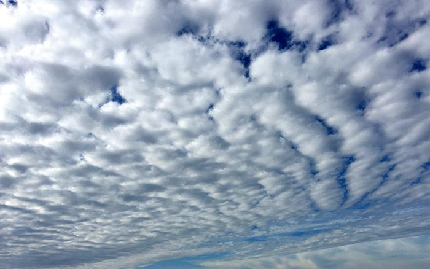
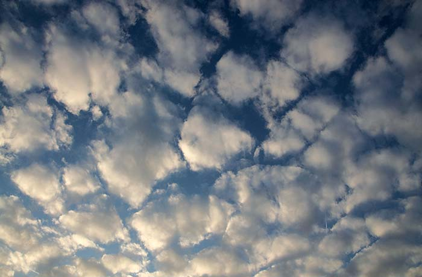

1 / 4

Find the Stars.
(Img Credit: Phillippe Don)
2 / 4

A Winter Constellation
ORION THE GREAT HUNTER: Named after a mythological greek hero, in pursuit of Medusa. Start by
identifying a row of 3 stars close together (the Orion Belt). (Img Credit: starregistration.net)
3 / 4

A Constellation All Year Round
THE BIG BEAR: Identify it by its brightest stars, the Plough (the bear tail). A film for inspiration: the Golden Compass. (Img Credit: starregistration.net)
4 / 4

An Artist Depicts: A Summer Constellation
CYGNUS THE SWAN: Identify it by the Summer Triangle, the three bright stars directly above the observer. (Img Credit: bbc.co.uk)
❮
❯
1 / 8

What Are the Clouds Saying?
(Img Credit: Washington Post)
2 / 8

Cumulus the Beautiful
Puffy white cotton balls. They mean fair weather, good sea breezes, and warmth is coming. (Img Credit: boatus.com)
2 / 10

Cirrus the High
The highest, least substantial, and wispy clouds. They mean warm weather is coming. (Img Credit: boatus.com)
3 / 10

Cirrostratus: Cirrus in Sheets
Sheets of Cirrus clouds. In altitude, slightly lower than Cirrus clouds. If it covers the sky, it means a storm is coming. (Img Credit: boatus.com) (Img Credit: boatus.com)
4 / 10
Cirrocumulus the Uncertain
Slightly puffy Cirrus clouds. Similar altitude as Cirrostratus. Look like fish scales. Epitomized by phrase "mackeral sky mackeral sky, not long wet, not long dry" indicates changing weather is coming. (Img Credit: boatus.com)
5 / 10

Altostratus the Claustrophobic
Sheets of silky clouds. In altitude, lower than all types of Cirrus clouds, and thicker and darker. They mean rain is coming. (Img Credit: boatus.com) (Img Credit: boatus.com)
6 / 10

Altocumulus
Alto clouds, cumulus style (puffy rolls) Other than appearance, same as Altostratus. They mean rain is coming. (Img Credit: boatus.com) (Img Credit: boatus.com)
7 / 10

Stratocumulus
Sheets of large, dark, puffy (cumulus) balls. They mean bad weather is coming. (Img Credit: boatus.com) (Img Credit: boatus.com)
❮
❯